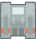
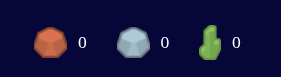
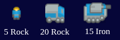
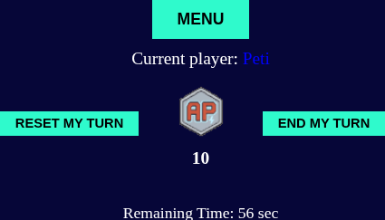
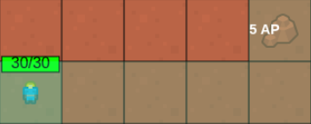
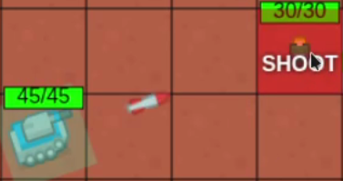

Rock: Basic building material for Workers and Trucks.
Rock: Basic building material for Workers and Trucks.

Iron: Basic building material for Tanks.

Uranium: Collect 20 to win the game!

Action Points: In each round you'll have 10.
You can use it to move your units, attack enemies, or buy new units.

Worker: Mines the following amount of resources.

Truck: Mines the following amount of resources.

Tank: Attacks enemy units.

Base: If destroyed, your enemy wins.

Here you can see all your collected resources.

Here you can see all the units and there cost.
If you've got enough resources, you can buy them and they'll spawn next to your base, if there's free
space.

Here you can see the current player, how many action points you have, and the remaining time of the
round.
You can reset your turn, so you start from the beginning, but your timer won't reset.
Also, you can end your turn here, or open the main menu.

When you select a unit, you can move it, if you've got enough action points.
When you don't have enough action points, the number will be shown red, and the unit won't move.
If you move your Worker Unit, or your Truck to a resource node, it will collect and bring the given amount
of resource to your base.
The given unit will move to your base, without spending any action points.

If you've got a tank in range of an enemy, you can attack it.
When the enemy unit's health reaches zero, it dies.
When the enemy base's health reaches zero, you win.